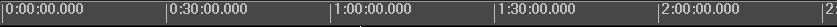
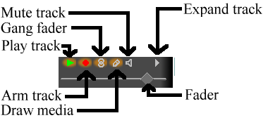

,
The editing mode buttons
,
The editing mode buttons
There are two types of moviegoers: producers who create new content, going back over their content at future points for further refinement, and consumers who want to acquire the content and watch it. Cinelerra is not intended for consumers. Cinelerra has many features for uncompressed content, high resolution processing, and compositing, with very few shortcuts. Producers need these features because of the need to retouch many generations of footage with alterations to the format, which makes Cinelerra very complex. There are many more standard tools for consumers like MainActor, Kino, or Moxy, which you should consider before using Cinelerra.
In 1996 our first editor came out: Broadcast 1.0. It was just a window with a waveform in it, it could cut and paste stereo audio waveforms on a UNIX box, except unlike other audio editors it could handle files up to 2 gigabytes with only 64 megs of RAM. That was a feature normally only accessible to the highest end professional audio houses.
In 1997 Broadcast 1.0 was replaced by Broadcast 2.0. This time the window had a menubar, patchbay, console, and transport control. Broadcast 2.0 still only handled audio but this time it handled unlimited tracks, and it could perform effects on audio and save the resulting waveform to disk. More notably a few effects could be performed as the audio was playing back, in realtime. A user could mix unlimited numbers of tracks, adjust fade, pan, and EQ, and hear the result instantly. Amazingly this real time tweeking is still unavailable on most audio programs.
But Broadcast 2.0 still didn't handle video and it wasn't very graceful at audio either. In 1999 video broke into the story with Broadcast 2000. This iteration of the Broadcast series could do wonders with audio and offered a pretty good video feature set. It could edit video files up to 64 terabytes. It could do everything Broadcast 2.1 did with audio except now all effects for video and audio could be chained and performed on the fly, with instant feedback as a user tweeked parameters during playback. Broadcast 2000 made it very easy to do a lot of processing and editing on video and audio that would otherwise involve many hours setting up command line sequences and writing to disk. For a time it seemed as if the original dream of immersive movie making for everyone regardless of income level had arrived.
Later on Broadcast 2000 began to come short. Its audio was pretty graceful. Its video was graceful if you knew how to use it efficiently, but quality issues and new user interface techniques were emerging. Broadcast 2000 kept the audio interface from its ancestors, which didn't apply well to video. Users likewise were maturing. No longer would it be sufficient to just edit video on a UNIX box. Most users expected on UNIX the same thing they got in Win or Mac. In mid 2000 designs for a Broadcast 2000 replacement were drafted. The Broadcast name was officially retired from the series and the software would now be called Cinelerra. Cinelerra would allow users to configure certain effects in much less time than required with Broadcast 2000. It would begin to emulate some of the features found in Win and Mac software while not attempting to become a clone. It's interface would be designed for video from the ground up, while supplementing that with the Broadcast audio interface. As always, quality improvements would happen.
After many years of searching for the perfect documentation format we've arrived at TexInfo. This format can be converted to HTML, printed, automatically indexed, but most importantly is not bound to any commercial word processor. Documents written in Texinfo will be readable as long as there's a C compiler.
There are no screenshots in this manual. Screenshots become obsolete quickly and as a result confuse the users. What looks one way in a screenshot will always look different in the real program because the real program and the manual are always evolving, never perfectly synchronized. It is true that manuals should have screenshots, but our objective in omitting screenshots is to keep the software costs minimal so you don't have to pay for it. That includes additional labor to synchronize the manual with the software.
In addition to telling you the basic editing features of Cinelerra this manual covers tricks that won't be described anywhere else. We're going to try to come up with certain things you can do with Cinelerra that you wouldn't think of on your own.
The Cinelerra package contains Cinelerra, Mix2000, Mplex, and XMovie, along with standalone libraries for various functions. All these programs are useful and in most cases they're the only free programs available for dealing with uncompressed, high resolution movies.
All of these programs tie into the same code base. Updates in one area of the code base usually affect everything else so everything would have to be downloaded again even if one thing changed. By including everything in one package you can be instantly updated for movie making after one download.
The purpose of the various programs is as follows:
We try to include all the dependancies because of the difficulty in tracking them down. Furthermore, the versions of some of the dependancies Cinelerra requires differ from the versions other utilities may require, making it impossible to coexist on the same system without static inclusion.
Cinelerra is best installed by downloading an RPM and running
rpm -U --force --nodeps hvirtual*.rpm
on a RedHat system.
On systems which don't support RPM look for a utility called rpm2cpio. Download a Cinelerra RPM and from the / directory run
rpm2cpio hvirtual*.rpm | cpio -i --make-directories
It should be noted that the compiler used in building Cinelerra binaries is the free GNU compiler and although it can reorder instructions for Pentium I and use some the of Pentium II branch instructions it's 12 years behind most modern CPUs. You can try different compilers and optimization flags by compiling the source.
Compiling the source is hard and there's no warranty if the source code fails to compile, but the method for compiling starts by downloading the source code and decompressing.
tar jxf hvirtual*.tar.bz2
Enter the hvirtual directory
cd hvirtual
and set some environment variables. For Pentium II use:
export CFLAGS='-O3 -march=i686 -fmessage-length=0 -funroll-all-loops -fomit-frame-pointer -malign-loops=2 -malign-jumps=2 -malign-functions=2 -I/usr/local/include'
For Pentium I and old AMD's use:
export CFLAGS='-O3 -fmessage-length=0 -funroll-all-loops -fomit-frame-pointer -malign-loops=2 -malign-jumps=2 -malign-functions=2 -I/usr/local/include'
Then run
make
The make procedure should run through all the directories and put binaries in the i686 directories. When we originally supported Alpha it was convenient to compile Alpha and i686 binaries simultaneously, in different directories so all the binaries are put in i686 directories.
Once finished run
make install
to install the binaries. The output is put in the following directories:
The main binaries are the Cinelerra, XMovie, Mix2000 executables and several utilities for reading MPEG transport streams.
Run Cinelerra by running
/usr/bin/cinelerra
Because of the variety of uses, Cinelerra cannot be run optimally without some intimate configuration for your specific needs. Very few parameters are adjustible at compile time. Runtime configuration is the only option for most configuration because of the multitude of parameters.
Go to settings->preferences and run through the options.
These determine what happens when you play sound from the timeline.
Cinelerra uses a pipeline for rendering audio. The first stage is reading large chunks of audio from disk, the samples to read from disk. This is followed by processing small fragments in a virtual console.
The second stage is rendering small fragments through the virtual console to the sound driver. A larger value here causes more latency when you change mixing parameters but gives more reliable playback.
Some sound drivers don't allow changing of the console fragment so latency is unchanged no matter what this value is.
Causes the timeline window to scroll when the playback cursor moves out of view. This can bog down the X Server.
Most soundcards and sound drivers don't give reliable information on the number of samples the card has played. When playing video you need this information for synchronization. This option causes the sound driver to be ignored and a software timer to be used for synchronization.
Back in the days when 150Mhz was the maximum, this allowed uninterrupted playback on heavy loads. Now you'll probably only need it for playing video and audio when the load is to high for uninterrupted audio.
There are many sound drivers for Linux. This allows selecting one and setting parameters specific to it. Some of the common parameters for a sound driver are
Usually a file in the /dev/ directory which controls the device.
The number of bits of precision Cinelerra should set the device for. This sometimes has a figuritive meaning. Some sound drivers need to be set to 32 bits to perform 24 bit playback and won't play anything when set to 24 bits. Some sound drivers need to be set to 24 bits for 24 bit playback.
The number of channels Cinelerra should set the device for. Regardless of the number of channels in the project, the number of channels set here will be written to the device. When this is set to 2 and the project has 1 channel you'll hear sound through the left speaker and not centered as expected for a monaural project. When this is set to 1 and the project has 2 channels you'll hear the left channel centered and not 2 channels mixed together.
These determine what happens when you play video from the timeline.
The number of frames per second being displayed during playback.
The algorithm used in all video resizing in the virtual console. This doesn't affect scaling to the size of the compositor window.
lowest but fastest quality. Produces jagged edges and uneven motion.
highest but slowest quality. For enlarging a bicubic interpolation is used, which blurs slightly but doesn't reveal stair steps. For reduction a bilinear interpolation is used, which produces very sharp images and reduces noise. The bilinear reduced images can be sharpened with a sharpen effect with less noise than a normal sized image.
when slight enlargement is needed a bilinear enlargement looks better than a bicubic enlargement.
The Quicktime/AVI decoder can handle CDROM sources better when this is around 1000000. This reduces the amount of seeking. For normal use this should be 0.
Normally video on the timeline goes to the compositor window during continuous playback and when the insertion point is repositioned. Instead of sending video to the Compositor window the video driver can be set to send video to another output device during continuous playback. This doesn't affect where video goes when the insertion point is repositioned, however.
Various parameters are given for Video Driver depending on the driver.
The is intended for dual monitor displays. Depending on the value of Display, the Compositor window will appear on a different monitor from the rest of the windows.
Usually a file in the /dev/ directory which controls the device.
Make the even lines odd and the odd lines even when sending to the device. On an NTSC or 1080i monitor the fields may need to be swapped to prevent jittery motion.
Devices with multiple outputs may need a specific connector to send video on.
The IEEE1394 standard specifies something known as the port. This is probably the firewire card number in the system to use.
The IEEE1394 standard specifies something known as the channel. For DV cameras it's always 63.
These determine what happens when you record audio.
This is used for recording audio in the Record window. It may be shared with the Record Driver for video if the audio and video are wrapped in the same stream. It takes variable parameters depending on the driver. The parameters have the same meaning as they do for playback.
Usually a file in the /dev/ directory which controls the device.
The number of bits of precision Cinelerra should set the device for. This sometimes has a figuritive meaning. Some sound drivers need to be set to 32 bits to perform 24 bit recording and won't record anything when set to 24 bits. Some sound drivers need to be set to 24 bits for 24 bit recording.
The number of channels Cinelerra should set the device for. Regardless of the number of channels in the record operation, the number of channels set here will be read from the device. When this is set to 2 and the record operation has 1 channel you'll record the left speaker and not a mix of the left and right speakers as expected for a monaural project. When this is set to 1 and the project has 2 channels you'll record the left and right channels mixed into the left speaker and not 1 channel spead across two speakers.
Audio is first read in small fragments from the device. Many small fragments are combined into a large fragment before writing to disk. The disk writing process is done in a different thread. The value here determines how large the combination of fragments is for each disk write.
Regardless of what the project settings are. This is the sample rate used for recording. This should be the highest the audio device supports.
These determine what happens when you record video.
This is used for recording video in the Record window. It may be shared with the Record Driver for audio if the audio and video are wrapped in the same stream. It takes variable parameters depending on the driver. The parameters have the same meaning as they do for playback.
Frames are recorded in a pipeline. First frames are buffered in the device. Then they're read into a larger buffer for writing to disk. The disk writing is done in a different thread as the device reading. For certain codecs the disk writing uses multiple processors. This value determines how many frames are written to disk at a time.
The number of frames to store in the device before reading. This determines how much latency there can be in the system before frames are dropped.
Video uses audio for
synchronization but most soundcards don't give accurate position information. This calculates an estimation of audio position in software instead of the hardware for synchronization.
For high bitrate recording the drives may be fast enough to store the data but Linux may wait several minutes and stall as it writes several minutes of data at a time. This forces Linux to flush its buffers every second instead of every few minutes and produce slightly better realtime behavior.
This is the size of the frames recorded. It is independant of the project frame size because most video devices only record a fixed frame size. If the frame size given here isn't supported by the device it might crash Cinelerra.
The frame rate recorded is different from the project settings. This sets the recorded frame rate.
You'll spend most of your time configuring this section.
Back in the days when 4 MB/sec was unearthly speed for a hard drive, index files were introduced to speed up drawing the audio tracks. This option determines where index files are placed on the hard drive.
Determines the size of an index file. Larger index sizes allow smaller files to be drawn faster while slowing down the drawing of large files. Smaller index sizes allow large files to be drawn faster while slowing down small files.
To keep the index directory from becoming unruly, old index files are deleted. This determines the maximum number of index files to keep in the directory.
When you change the index size or you want to clean out excessive index files, this deletes all the index files.
To speed up rendering, several assets are kept open simultaneously. This determines how many are kept open. A number too large may exhaust your memory pretty fast and result in a crash. A number too small may result in slow playback as assets need to be reopened more frequently.
Some effects need a certain amount of time to settle in. This sets a number of seconds to render without writing to disk before the selected region is rendered. When using the renderfarm you'll sometimes need to preroll to get seemless transitions between the jobs. Every job in a renderfarm is prerolled by this value.
Cinelerra tries to use all processors on the system by default but sometimes you'll only want to use one processor, like in a renderfarm client. This forces only one processer to be used. The operating system, however, usually uses the second processor anyway for disk access so this option is really a 1.25 processor mode.
To use the renderfarm set these options. Ignore them for a standalone system
When selected, all the file->render operations use the renderfarm.
Displays all the nodes on the renderfarm and which ones are active. Select the ON column to activate and deactivate nodes. Select the HOSTNAME and PORT columns to edit a node. Computer freaks may be better off editing the ~/.bcast/.Cinelerra_rc file than this if they have hundreds of nodes.
Edit the hostname of an existing node or enter the hostname of a new node here.
Edit the port of an existing node or enter the port of a new node here.
When editing an existing node, hit this to commit the changes to HOSTNAME and PORT. The changes won't be committed if you don't hit this buttoin.
Create a new node with the HOSTNAME and PORT settings.
Deletes whatever node is highlighted in the NODES list.
Sorts the NODES list based on the hostname.
Sets the relative location of all the assets on the nodes. If the assets are in /mov on the master and the master filesystem is mounted under /mnt on the nodes, the filesystem prefix should be /mnt. Ideally the assets should appear under the same directory on the nodes as the master. In this case the filesystem prefix can be /.
Determines the number of jobs to dispatch to the renderfarm. The more jobs you create, the more finely balanced the renderfarm becomes.
These parameters affect purely how the user interface works.
Various representations of time are given. Select the most convenient one. The time representation can also be changed by CTRL clicking on the time ruler.
The Resource Window displays thumbnails of assets by default. This can take a long time to set up. This option disables the thumbnails.
Cinelerra not only allows you to perform editing by dragging in/out points but also defines three seperate operations which occur when you drag an in/out point. For each mouse button you select the behavior in this window. The usage of each editing mode is described in editing.
Some sound sources have a lower noise threshold than others. Everything below the noise threshold is meaningless. This option sets the meters to clip below a certain level. Consumer soundcards usually bottom out at -65. Professional soundcards bottom out at -90.
This option allows you to select the format for all the VU meters. If you're a CS major select percentage and if you're a EE major select DB. With that, be aware all levels in Cinelerra are input as DB.
Cinelerra supports variable themes. Select one here and restart Cinelerra to see it.
When Cinelerra first starts, you'll get four main windows. Hitting CTRL-w in any window closes it.
In here you'll scrub around source media and clips, selecting regions to paste into the project. Operations done in the viewer affect a temporary EDL or a clip but not the timeline.
This window displays the output of the timeline. It's the interface for most compositing operations or operations that affect the appearance of the timeline output. Operations done in the Compositor affect the timeline but don't affect clips.
This contains the timeline and the entry point for all menu driven operations. The timeline consists of a vertical stack of tracks with horizontal representation of time. This defines the output of rendering operations and what is saved when you save files.
Effects, transitions, clips, and assets are accessed here. Most of the resources are inserted into the project by dragging them out of the resource window. Management of resource allocation is also performed here.
Under the Window menu you'll find options affecting the main windows. default positions repositions all the windows to a 4 screen editing configuration. On dual headed displays, the default positions operation fills only one monitor with windows.
An additional window, the levels window can be brought up from the Window menu. The levels window displays the output audio levels after all mixing is done.
All data that you work with in Cinelerra is acquired either by recording from a device or by loading from disk. This section describes loading.
The loading and playing of files is just as you would expect. Just go to file->Load, select a file for loading, and hit ok. Hit the forward play button and it should start playing, regardless of whether a progress bar has popped up.
Another way to load files is to pass the filenames as arguments on the command line. This creates new tracks for every file and starts the program with all the arguments loaded.
If the file is a still image, the project's attributes are not changed and the first frame of the track becomes the image. If the file has audio, Cinelerra may build an index file for it to speed up drawing. You can edit and play the file while the index file is being built.
The format of the file affects what Cinelerra does with it. Some formats replace all the project settings. Some just insert data with existing project settings. If your project sample rate is 48khz and you load a sound file with 96khz, you'll still be playing it at 48khz. XML files, however, replace the project settings. If you load an XML file at 96khz and the current project sample rate is 48khz, you'll change it to 96khz. Supported file formats are currently:
Quicktime is not the standard for UNIX but we use it because it's well documented. All of the Quicktime movies on the internet are compressed. Cinelerra doesn't support compressed Quicktime movies. Most of the Quicktime footage dealt with in Cinelerra is generated by Cinelerra either recording from a device or rendering. The best Quicktime settings to use are JPEG video and twos audio.
Cinelerra generates a special table of contents file when you render an image sequence. You can either select every image file to load or select the table of contents when the rendering is done. Selecting the table of contents is faster and doesn't fill up the resource window with thousands of images.
When loaded, the image takes up one frame in length and doesn't change the project attributes.
You need to run mpeg3toc to generate a table of contents for these, then load the table of contents. If you want to edit a DVD, find the corresponding ifo file for the program of interest and run
mpeg3toc /cdrom/video_ts/vts_01_0.ifo dvd.toc
or something similar. Then load dvd.toc. This allows frame accurate editing where none would be possible otherwise.
You need to run mpeg3toc on these just like MPEG 1,2 video. Program and transport streams are structured into multiple tracks. Each track can be video or audio. Each audio track can have 1-6 channels. Cinelerra converts each channel of audio into a track, so for MPEG streams with multiple tracks, the tracks will be flattened.
These can be loaded directly with no table of contents. Variable bitrate streams may need a table of contents but are playable without it.
These are generated by Cinelerra for storing edit lists. They change project attributes when loaded.
Usually three things happen when you load a file. First the existing project is cleared from the screen, second the project's attributes are changed to match the file's, and finally the new file's tracks are created in the timeline.
But Cinelerra lets you change what happens when you load a file.
In the file selection box go to the Insertion strategy box and select it. Each of these options loads the file a different way.
All tracks in the current project are deleted and new tracks are created to match the source. Project attributes are only changed when loading XML. If multiple files are selected it adds new tracks for every file.
Same as replace current project except if multiple files are selected it concatenates the tracks of every file after the first.
The current project is not deleted and new tracks are created for the source.
The current project is not deleted and new files are concatenated to the existing tracks.
The file is pasted in like a normal paste operation.
The timeline is unchanged and new resources are created in the Resource Window.
The insertion strategy is a recurring option in many of Cinelerra's functions. In each place the options do the same thing. With these options you can almost do all your editing by loading files.
If you load files by passing command line arguments to Cinelerra, the files are loaded with Replace current project rules.
In the file selection box go to the list of files. Select a file. Go to another file and select it while holding down CTRL. This selects one additional file. Go to another file and select it while holding down SHIFT. This selects every intervening file. This behavior is available in most every list box.
Select a bunch of mp3 files and Replace current project and concatenate tracks in the insertion strategy to create a song playlist.
There is one special XML file on disk at all times. After every editing operation Cinelerra saves the current project to a backup in $HOME/.bcast/backup.xml. In the event of a crash go to file->load backup to load the backup. It is important after a crash to reboot Cinelerra without performing any editing operations. Loading the backup should be the first operation or you'll overwrite the backup.
When Cinelerra saves a file it saves an edit decision list of the current project but doesn't save any media. Go to File->save as.... Select a file to overwrite or enter a new file. Cinelerra automatically concatenates .xml to the filename if no .xml extension is given.
The saved file contains all the project settings and locations of every edit but instead of media it contains pointers to the original media files on disk.
For each media file the XML file stores either an absolute path or just the relative path. If the media is in the same directory as the XML file a relative path is saved. If it's in a different directory an absolute path is saved.
In order to move XML files around without breaking the media linkages you either need to keep the media in the same directory as XML file forever or save the XML file in a different directory than the media and not move the media ever again.
If you want to create an audio playlist and burn it on CD-ROM, save the XML file in the same directory as the audio files and burn the entire directory. This keeps the media paths relative.
XML files are useful for saving the current state before going to sleep and saving audio playlists but they're limited in that they're specific to Cinelerra. You can't play XML files in a dedicated movie player. Realtime effects in an XML file have to be resynthesized every time you play it back. The XML file also requires you to maintain copies of all the source assets on hard drives, which can take up space and cost a lot of electricity to spin. For a more persistent storage of the output there's rendering.
Rendering takes a section of the timeline, performs all the editing, effects and compositing, and stores it in a pure movie file. You can then delete all the source assets, play the rendered file in a movie player, or bring it back into Cinelerra for more editing. It's very difficult to retouch any editing decisions in the pure movie file, however, so keep the original assets and XML file around several days after you render it.
To begin a render operation you need to define a region of the timeline to render. The navigation section describes methods of defining regions. See NAVIGATING THE PROJECT. When a region is highlighted or in/out points are set, the affected region is rendered. When no region is highlighted, everything after the insertion point is rendered.
Go to File->render to bring up the render dialog. Select the magnifying glass to bring up a file selection dialog. This determines the filename to write the rendered file to.
In the render dialog select a format from the File Format menu. The format of the file determines whether you can render audio or video or both. Select Render audio tracks to generate audio tracks and Render video tracks to generate video tracks. Select the wrench next to each toggle to set compression parameters. If the file format can't store audio or video the compression parameters will be blank. If Render audio tracks or Render video tracks is selected and the file format doesn't support it, trying to render will pop up an error.
The Create new file at each label option causes a new file to be created when every label in the timeline is encountered. This is useful for dividing long audio recordings into individual tracks. When using the renderfarm, Create new file at each label causes one renderfarm job to be created at every label instead of using the internal load balancing algorithm to space jobs.
When Create new file at each label is selected, a new filename is created for every output file. If the filename given in the render dialog has a 2 digit number in it, the 2 digit number is overwritten with a different incremental number for every output file. If no 2 digit number is given, Cinelerra automatically concatenates a number to the end of the given filename for every output file.
In the filename /hmov/track01.wav the 01 would be overwritten for every output file. The filename /hmov/track.wav; however, would become /hmov/track.wav001 and so on and so forth. Filename regeneration is only used when either renderfarm mode is active or creating new files for every label is active.
Finally the render dialog lets you select an insertion mode. The insertion modes are the same as with loading files. In this case if you select insert nothing the file will be written out to disk without changing the current project. For other insertion strategies be sure to prepare the timeline to have the output inserted at the right position before the rendering operation is finished. See EDITING. Editing describes how to cause output to be inserted at the right position.
It should be noted that even if you only have audio or only have video rendered, a paste insertion strategy will behave like a normal paste operation, erasing any selected region of the timeline and pasting just the data that was rendered. If you render only audio and have some video tracks armed, the video tracks will get truncated while the audio output is pasted into the audio tracks.
The thing you want to do most of the time is get to a certain time and place in the media. Internally the media is organized into tracks. Each track extends across time. Navigation involves both getting to a track and getting to a certain time in the track.
The program window contains many features for navigation and displays the timeline as it is structured in memory: tracks stacked vertically and extending across time. The horizontal scroll bar allows you to scan across time. The vertical scroll bar allows you to scan across tracks.
Below the timeline you'll find the zoom panel. The zoom panel contains
values for sample zoom, amplitude, and track
zoom. These values in addition to the scrollbars are all that's
needed to position the timeline.
,
Changing the sample zoom causes the amount of time visible to change. If your mouse has a wheel and it works in X11 go over the tumblers and use the wheel to zoom in and out.
The amplitude only affects audio. It determines how big the waveform is if the waveform is drawn.
The track zoom affects all tracks. It determines the height of each track. If you change the track zoom the amplitude zoom compensates so audio waveforms look proportional.
In addition to the graphical tools, you'll probably more often use the keyboard to navigate. Use PAGE UP and PAGE DOWN to scroll up and down the tracks.
Use the LEFT and RIGHT arrows to move across time. You'll often need to scroll beyond the end of the timeline but scrollbars won't let you do it. Instead use the RIGHT arrow to scroll past the end of timeline.
Use the UP and DOWN arrows to change the sample zoom by a power of 2.
CTRL-UP and CTRL-DOWN cause the amplitude zoom to change.
CTRL-PGUP and CTRL-PGDOWN cause the track zoom to change.
By default you'll see a flashing insertion point in the program window the first time you boot it up. This is where new media is pasted onto the timeline. It's also the starting point of all playback operations. When rendering it defines the region of the timeline to be rendered.
The insertion point is normally moved by clicking inside the timebar.
Any region of the timebar not obscured by labels and in/out points is a
hotspot for repositioning the insertion point.
, The main timebar
The insertion point also can be moved by clicking in the timeline itself, but not always. The insertion point has two modes of operation:
The mode of operation is determined by selecting the arrow or the
i-beam in the buttonbar.
,
The editing mode buttons
If the arrow is highlighted it enables drag and drop mode. In drag and drop mode, clicking in the timeline doesn't reposition the insertion point. Instead it selects an entire edit. Dragging in the timeline repositions the edit, snapping it to other edit boundaries. This is normally useful for reordering audio playlists and moving effects around.
If the i-beam is highlighted it enables cut and paste mode. In cut and paste mode clicking in the timeline repositions the insertion point. Dragging in the timeline highlights a region. The highlighted region becomes the playback range during the next playback operation, the rendered range during the next render operation, and the region affected by cut and paste operations.
Shift-clicking in the timeline extends the highlighted region.
Double-clicking in the timeline selects the entire edit the cursor is over.
It should be noted that when moving the insertion point and selecting regions, the positions are either aligned to frames or aligned to samples. When editing video you'll want to align to frames. When editing audio you'll want to align to samples. This is set in settings->align cursor on frames.
If the highlighted region is the region affected by cut and paste operations, how do I cut and paste in drag and drop mode? In this case you need to set in/out points to define an affected region.
In both editing modes you can set in/out points. The in/out points define the affected region. In drag and drop mode they are the only way to define an affected region. In both cut and paste mode and drag and drop mode they override the highlighted area. If a highlighted area and in/out points are set, the highlighted area affects playback while the in/out points affect editing operations. To avoid confusion it's best to use either highlighting or in/out points but not both simultaneously.
To set in/out points go to the timebar and position the insertion point
somewhere. Hit the  in point button. Go
to a position after the in point and hit the
in point button. Go
to a position after the in point and hit the  out point button.
out point button.
 Timebar with in/out points set.
Timebar with in/out points set.
Select either the in point or the out point and the insertion point jumps to that location. After selecting an in point, if you hit the in point button the in point will be deleted. After selecting an out point, if you hit the out point button the out point will be deleted.
If you select a region somewhere else while in/out points already exist, the existing points will be repositioned when you hit the in/out buttons.
Shift-clicking on an in/out point extends the highlighted region to that point.
Instead of using the button bar you can use the [ and ] keys to toggle in/out points.
The insertion point and the in/out points allow you to define an affected region but they don't let you jump to exact points on the timeline very easily. For this purpose there are labels.
Labels are an easy way to set exact locations on the timeline you want
to jump to. When you position the insertion point somewhere and hit
the  label button a new label appears on the
timeline.
label button a new label appears on the
timeline.
 Timebar with a label on it
Timebar with a label on it
No matter what the zoom settings are, clicking on the label positions the insertion point exactly where you set it. Hitting the label button again when a label is selected deletes it.
Shift-clicking on a label extends the highlighted region.
Double-clicking between two labels highlights the region between the labels.
Hitting the l key has the same effect as the label button.
If you hit the label button when a region is highlighted, two labels are toggled at each end of the highlighted region. If one end already has a label, then the existing label is deleted and a label is created at the opposite end.
Labels can reposition the insertion point when they are selected but
they can also be traversed with the  label
traversal buttons. When a label is out of view, the label traversal
buttons reposition the timeline so the label is visible. There are
keyboard shortcuts for label traversal, too.
label
traversal buttons. When a label is out of view, the label traversal
buttons reposition the timeline so the label is visible. There are
keyboard shortcuts for label traversal, too.
CTRL-LEFT repositions the insertion point on the previous label.
CTRL-RIGHT repositions the insertion point on the next label.
With label traversal you can quickly seek back and forth on the timeline but you can also select regions.
SHIFT-CTRL-LEFT extends the highlighted region to the previous label.
SHIFT-CTRL-RIGHT extends the highlighted region to the next label.
Manually hitting the label button or l key over and over again to delete a series of labels can get tedious. For deleting a set of labels, first highlight a region and second use the Edit->Clear labels function. If in/out points exist, the labels between the in/out points are cleared and the highlighted region ignored.
The navigation features of the Viewer and Compositor behave very
similarly. Each has a timebar and slider below the video output. The
timebar and slider are critical for navigation.
 ,
,
The timebar represents the entire time covered by the program. When you define labels and in/out points it defines those, too. Finally the timebar defines a region known as the preview region.
The preview region is the region of the timeline which the slider effects. The slider only covers the time covered by the preview region. By using a preview region inside the entire program and using the slider inside the preview region you can quickly and precisely seek in the compositor and viewer.
When you replace the current project with a file the preview region automatically resizes to cover the entire file. When you append data or change the size of the current project, the preview region stays the same size and shrinks. Therefore, you need to resize the preview region.
Load a file and then slide around it using the compositor slider. The insertion point in the main window follows the compositor. Move the pointer over the compositor's timebar until it turns into a left resize pointer. The click and drag right. The preview region should have changed and the slider resized proportionally.
Go to the right of the timebar until a right resize pointer appears. Drag left so the preview region shrinks.
Go to the center of the preview region in the timebar and drag it
around to convince yourself if can be moved.
 ,
,
Preview region in compositor
If you go to the slider and slide it around with the preview region shrunk, you'll see the slider only affects the preview region. The timebar and slider in the viewer window work exactly the same.
Labels and in/out points are fully supported in the viewer and compositor. The only difference between the viewer and compositor is the compositor reflects the state of the program while the viewer reflects the state of a clip but not the program.
When you hit the label button in the compositor, the label appears both in the compositor timebar and the program timebar.
When you select a label or in/out point in the compositor, the program
window jumps to that position.
 Labels and in/out points in the viewer.
Labels and in/out points in the viewer.
In the viewer and compositor, labels and in/out points are displayed in the timebar. Instead of displaying just a region of the program, the timebar displays the entire program here.
The resource window is divided into two areas. One area lists folders and another area lists folder contents. Going into the folder list and clicking on a folder updates the contents area with the contents of that folder.
The folder and contents can be displayed as icons or text.
Right clicking in the folder or contents area brings up a menu containing formatting options. Select Display text to display a text listing. Select Sort items to sort the contents of the folder alphabetically.
Transport controls are just as useful in navigation as they are in
playing back footage, hence they are described here. Each of the
Viewer, Compositor, and Program windows has a transport panel.
 The transport panel.
The transport panel.
The transport panel is controlled by the keyboard as well as the graphical interface. For each of the operations it performs, the starting position is the position of the insertion point or slider. The ending position is either the end or start of the timeline or the end or start of the selected region if there is one.
The orientation of the end or start depends on the direction of playback. If it's forward the end position is the end of the selected region. If it's backward the end position is the start of the selected region.
The insertion point moves to track playback. When playback stops it leaves the insertion point where it stopped. Thus, by playing back you change the position of the insertion point.
The keyboard interface is usually the fastest and has more speeds. The transport keys are arranged in a T on the number pad.
Hitting any key on the keyboard twice pauses it.
When using frame advance functions the behavior may seem odd. If you frame advance forward and then frame advance backward, the displayed frame doesn't change. This is because the playback position isn't the frame but the time between two frames. The rendered frame is the area that the playback position crosses. When you increment the time between two frames by one and decrement it by one, you cross the same frame both times and so the same frame is displayed.
Editing comprises both the time domain and the track domain. Since the timeline consists of a stack of tracks, you need to worry about how to sort and create tracks in addition to what time certain media appears on a track.
In the time domain, Cinelerra offers many ways to approach the editing process. The three main methods are two screen editing, drag and drop editing, and cut and paste editing.
There are several concepts Cinelerra uses when editing which apply to
all the methods. The timeline is where all editing decisions are
represented. Every track on the timeline has a set of attributes on
the left, the most important of which is the arm track
attribute.
Track attributes
Only the armed tracks are affected by editing operations. Make sure you have enough armed destination tracks when you paste or splice material or some tracks in the material will get left out.
In addition to editing operations, the armed tracks in combination with the active region determine where material is inserted when loading files. If the files are loaded with one of the insertion strategies which doesn't delete the existing project, the armed tracks will be used as destination tracks.
The active region is the range of time in the edit decision on the timeline. The active region is determined first by the presence of in/out points in the timeline. If those don't exist the highlighted region is used. If no highlighted region exists the insertion point is used as the active region and the active length is 0.
Finally, editing decisions never affect source material. Editing only affects pointers to source material, so if you want to have a media file at the end of your editing session which represents the editing decisions, you need to render it. See RENDERING FILES.
Tracks in Cinelerra either contain audio or video. There is no special designation for tracks other than the type of media they contain. When you create a new project, it contains a certain mumber of default tracks. You can still add or delete tracks from a number of menus. The Tracks menu contains a number of options for dealing with multiple tracks simultaneously. Each track itself has a popup menu which affects one track.
Bring up the popup menu by moving over a track and right clicking. The popup menu affects the track whether it's armed or not.
Move up and move down moves the one track up or down in the stack. Delete track deletes the track.
Operations in the Tracks menu affect only tracks which are armed.
Move tracks up and Move tracks down shift all the armed tracks up or down the stack.
Delete tracks deletes the armed tracks.
Delete last track deletes the last track, whether it's armed or not. Holding down the d key quickly deletes all the tracks.
Concatenate tracks is more complicated. It takes every playable track and concatenates it to the end of the first armed tracks. If there are two armed tracks followed by two playable tracks, the concatenate operation puts the two playable tracks after the two armed tracks. If there are three playable tracks instead, two tracks are put after the armed tracks and a third track is put on the end of the first armed track. The destination track wraps around until all the playable tracks are concatenated.
Finally, you'll want to create new tracks. The Audio and Video menus each contain an option to add a track of their specific type. In the case of audio, the new track is put on the bottom of the timeline and the output channel of the audio track is incremented by one. In the case of video, the new track is put on the top of the timeline. This way, video has a natural compositing order. New video tracks are overlayed on top of old tracks.
This is the fastest way to construct a program out of movie files. The idea consists of viewing a movie file in one window and viewing the program in another window. Sections of the movie file are defined in one window and transferred to the end of the program in the other window.
The way to begin a two screen editing session is to load some resources. In file->load load some movies with the insertion mode create new resources. You want the timeline to stay unchanged while new resources are brought in. Go to the Resource Window and select the media folder. The newly loaded resources should appear. Drag a resource from the media side of the window over the Viewer window.
There should be enough armed tracks on the timeline to put the sections of source material that you want. If there aren't, create new tracks or arm more tracks.
In the viewer window seek to the starting point of a clip you want to
use. Use either the slider or the transport controls.
Use the preview region to narrow down the search. Set the
starting point with the in point button.
Seek to the ending point of the clip you want to use. Set the ending
point with the out point button. The
two points should now appear on the timebar and define a clip.
There are several things you can do with the clip now.
 inserts the clip in the timeline, pushing
everything back. If an in point or out point exists on
the timeline it's inserted there, otherwise it's inserted after the
insertion point. After that, the insertion point moves to the end of
the clip. If there is no in/out point, the insertion point will be
used as the next splice location. This way you can continuously build
up the program by splicing.
inserts the clip in the timeline, pushing
everything back. If an in point or out point exists on
the timeline it's inserted there, otherwise it's inserted after the
insertion point. After that, the insertion point moves to the end of
the clip. If there is no in/out point, the insertion point will be
used as the next splice location. This way you can continuously build
up the program by splicing.
 generates a new clip for the
resource window containing the affected region but doesn't change the
timeline. Every clip has a title and a description. These are
optional.
generates a new clip for the
resource window containing the affected region but doesn't change the
timeline. Every clip has a title and a description. These are
optional.
The answer is yes, you can you create a bunch of clips and drag them on the timeline. You can also drag edits around the timeline.
Load some files using file->load. Set the insertion mode to Create new resources. This loads the files into the Resource Window. Create some audio and video tracks on the timeline using the video and audio menus.
Open the Media folder in the resource window. Drag a media file from the resource window to the timeline. If the media has video, drag it onto a video track. If the media is pure audio, drag it onto an audio track.
Cinelerra fills out the audio and video tracks below the dragging cursor with data from the file. This affects what tracks you should create initially and which track to drag the media onto. If the media has one video track and two audio tracks, you'll need one video track and two audio tracks on the timeline and the media should be dragged over the first video track. If the media has audio only you'll need one audio track on the timeline for every audio track in the media and the media should be dragged over the first audio track.
When dragging, the media snaps to the start of track if the track is empty. If there are edits on the track, the media snaps to the nearest edit boundary.
You can also drag multiple files from the resource window. Either draw a box around the files, use SHIFT, or use CTRL when selecting files. When you drop the files in the timeline, they are concatenated. The behavior of SHIFT and CTRL changes depending on if the resources are in text or icons.
To display the resources as text or icons, right click inside the media list. Select either display icons or display text to change the list format.
When displaying text in the resource window SHIFT-clicking on media files extends the number of highlighted selections. CTRL-clicking on media files in text mode selects additional files one at a time.
When displaying icons in the resource window SHIFT-clicking or CTRL-clicking selects media files one at a time.
In addition to dragging media files, if you create clips and open the clip folder you can drag clips on the timeline.
In the timeline there is further dragging functionality. To enable the
dragging functionality of the timeline, select the arrow toggle
 . Move over an edit and drag it. If more than one
track is armed, Cinelerra will drag any edits which start on the same
position as the edit the cursur is currently over. During a dragging
operation the edit snaps to the nearest boundary.
. Move over an edit and drag it. If more than one
track is armed, Cinelerra will drag any edits which start on the same
position as the edit the cursur is currently over. During a dragging
operation the edit snaps to the nearest boundary.
Dragging edits around the timeline allows you to sort music playlists, sort movie scenes, and give better NAB demos but not much else.
This is the traditional method of editing in audio editors. In the case of Cinelerra, you either need to start a second copy of Cinelerra and copy from one copy to the other, copy from different tracks in the same copy, or load a media file into the Viewer and copy from there.
Load some files onto the timeline. To perform cut and paste editing
select the  i-beam toggle. Select a region of the
timeline and select the
i-beam toggle. Select a region of the
timeline and select the  cut button to cut it. Move the
insertion point to another point in the timeline and select the
cut button to cut it. Move the
insertion point to another point in the timeline and select the
 paste button. Assuming no in/out points are defined on
the timeline this performs a cut and paste operation.
paste button. Assuming no in/out points are defined on
the timeline this performs a cut and paste operation.
If in/out points are defined, the insertion point and highlighted region are overridden by the in/out points for clipboard operations. Thus, with in/out points you can perform cut and paste in drag and drop mode as well as cut and paste mode.
If you open a second copy of Cinelerra, cutting and pasting can transport media between the two copies.
A final operation in cut and paste editing is the edit->clear operation. If a region is highlighted or in/out points exist, the affected region is cleared by edit->clear. But if the insertion point is over an edit boundary and the edits on each side of the edit boundary are the same resource, the edits are combined into one edit comprised by the resource. The start of this one edit is the start of the first edit and the end of this one edit is the end of the second edit. This either results in the edit expanding or shrinking.
With some edits on the timeline it's possible to do trimming. By trimming you shrink or grow the edit boundaries by dragging them. In either drag and drop mode or cut and paste mode, move the cursor over an edit boundary until it changes shape. The cursor will either be an expand left or an expand right. If the cursor is an expand left, the dragging operation affects the beginning of the edit. If the cursor is an expand right, the dragging operation affects the end of the edit.
When you click on an edit boundary to start dragging, the mouse button number determines which dragging behavior is going to be followed. 3 possible behaviors are bound to mouse buttons in the interface preferences. See INTERFACE.
The effect of each drag operation not only depends on the behavior button but whether the beginning or end of the edit is being dragged. When you release the mouse button, the trimming operation is performed.
In a Drag all following edits operation, the beginning of the edit either cuts data from the edit if you move it forward or pastes new data from before the edit if you move it backward. The end of the edit pastes data into the edit if you move it forward or cuts data from the end of the edit if you move it backward. All the edits thereafter shift. Finally, if you drag the end of the edit past the start of the edit, the edit is deleted.
In a Drag only one edit operation, the behavior is the same when you drag the beginning or end of an edit. The only difference is none of the other edits in the track shift. Instead, anything adjacent to the current edit expands or shrinks to fill gaps left by the drag operation.
In a Drag source only operation, nothing is cut or pasted. If you move the beginning or end of the edit forward, the source reference in the edit shifts forward. If you move the beginning or end of the edit backward, the source reference shifts backward. Where the edit appears in the timeline remains the same but the source shifts.
For all file formats besides still images, the extent of the trimming operation is clamped to the source file length. Attempting to drag the start of the edit beyond the start of the source clamps it to the source start.
In all trimming operations, all edits which start on the same position as the cursor when the drag operation begins are affected. Unarm tracks to prevent edits from getting affected.
It would be sufficient to perform all changes to the timeline using editing operations, but this isn't very extensible. Certain timeline changes should produce a different effect in the output without involving a unique procedure to apply each change. This is why we have effects.
Effects fall into three categories, and each effect in a category is applied the same way.
These are layered under the track they apply to. They process the track when the track is played back, with no permanent storage of the output except when the project is rendered.
All the realtime effects are listed in the resource window.
These are performed on a section of the track and the result stored somewhere before they are played back. The result is usually pasted into the track to replace the original data.
The rendered effects are not listed in the resource window but instead are accessed in the Audio->Render effect and Video->Render effect options.
When one edit ends and another edit begins, the default behaviour is to have the first edit's output immediately become the output of the second edit when played back. Transitions are a way for the first edit's output to become the second edit's output with different variations.
Cinelerra supports audio and video transitions, all of which are listed in the resource window.
When you play media files in Cinelerra, the media files have a certain number of tracks, a certain frame size, a certain sample size, and so on and so forth. No matter what the media file has; however, it is still played back according to the project attributes. If an audio file's samplerate is different than the project attributes, it is resampled. If a video file's frame size is different than the project attributes, it is composited on a black frame, either cropped or bordered with black.
The project attributes